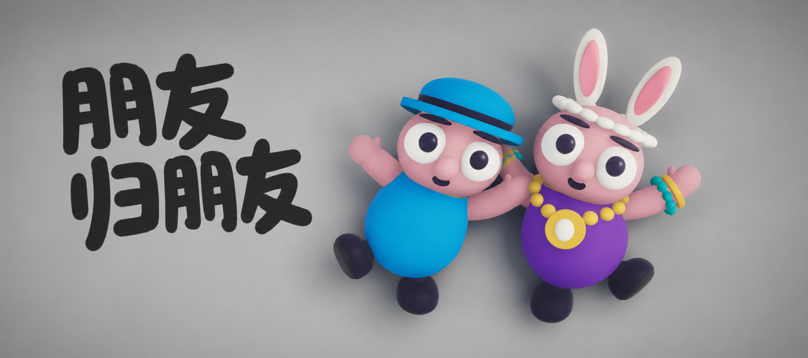

独立游戏制作者游戏策划作品集（玩法与系统设计）
朋友归朋友
这款 2–8 人派对游戏从我设计的桌游《黎明交易所》演变而来。玩家一起参加短活动，在大厅赚钱、购物、竞拍，再把买到的牌和装备分到三条路上对战。
我想让朋友一起玩得开心，也给认真搭配阵容的玩家留出赢的机会。是在大厅里花钱补强，还是把钱留给下一轮拍卖？这个决定会影响稍后的对战。
- 我的工作：
- 设计玩法和规则，根据试玩调整，核对游戏里的表现。
- 制作工具：
- UE5、Blender，程序主要由 Codex 实现。
- 团队：
- 个人
- 制作时间：
- —至今

STANDOFF The Director’s Cut
夜里的货运站，一名司机劫持了主管。玩家可以跟司机谈、打电话给他的家人，也可以转身离开。我想让同一场对峙因为玩家的一个动作，走向不同的结局。
制片方想让玩家照剧本演。偏离剧本时，它会剪掉某个可用的动作，但这场戏还会继续。比如“交谈”被剪掉后，把枪放到地上，就能重新跟司机谈。
- 我的工作：
- 确定主题和交互方向，通过试玩筛选动作与反馈。Codex、Claude Code 协助实现。
- 制作时间：
- 2026/11/12–11/15，个人参赛，UE5。